Atendimento presencial e online.
Suporte de 2ª a 6ª feira, das 08:00 às 18:00 horas.
Missionários dos serviços públicos.
Atendimento presencial e online.
Suporte de 2ª a 6ª feira, das 08:00 às 18:00 horas.
Missionários dos serviços públicos.
Câmara Municipal de Ibiraci
DAEPA - Departamento de água e esgoto de patrocínio
FAPSEM - Fundo de aposentadoria e pensão dos servidores / Tocantins

IPSEM - Instituto de previdência dos servidores municipais / Patrocínio

Prefeitura Municipal de Patrocínio
Prefeitura Municipal de Itabira
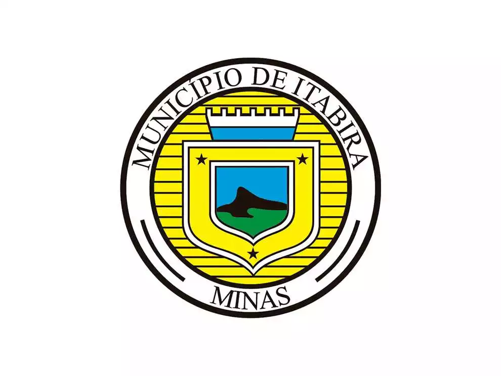Prefeitura Municipal de Vermelho Novo
Prefeitura Municipal de Manhuaçu

Prefeitura Municipal de Igarapé
Prefeitura Municipal de Martins Soares

Prefeitura Municipal de Araçuaí

Prefeitura Municipal de Itinga

Prefeitura Municipal de Tombos

Prefeitura Municipal de Carangola

Câmara Municipal de Nova Resende

Câmara Municipal de Bueno Brandão

Câmara Municipal de Carbonita

Câmara Municipal de Itinga
Câmara Municipal de Visconde do Rio Branco

Prefeitura Municipal de Comercinho
DAEPA - Departamento de água e esgoto de patrocínio
FAPSEM - Fundo de aposentadoria e pensão dos servidores/ Tocantins
IPSEM - Instituto de previdência dos servidores municipais / Patrocínio
Prefeitura Municipal de Itaobim
Prefeitura Municipal de Manhuaçu
Prefeitura Municipal de Martins Soares
Prefeitura Municipal de Matutina

Prefeitura Municipal de Minas Novas

Prefeitura Municipal de Patrocínio
Prefeitura Municipal de Pavão
Prefeitura Municipal de Salto da Divisa

SAAE - Serviço autônomo de água e esgoto de Santa Bárbara

Prefeitura Municipal de São Gotardo

Prefeitura Municipal de Tiros

Prefeitura Municipal de Tocantins
Prefeitura Municipal de Ubaporanga
Prefeitura Municipal de Conceição da Aparecida
SIND-UTE de Betim
Prefeitura Municipal de Virgem da Lapa
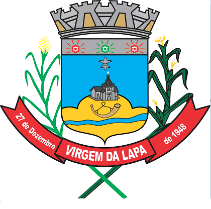Prefeitura Municipal de Urucânia
Prefeitura Municipal de Tombos
Prefeitura Municipal de Tarumirim
Prefeitura Municipal de Tabuleiro
Prefeitura Municipal de Simonésia

Prefeitura Municipal de Senhora dos Remédios

Prefeitura Municipal de Senhora de Oliveira

Prefeitura Municipal de São João das Missões
Prefeitura Municipal de São João do Manhuaçu
Prefeitura Municipal de São Brás do Suaçui

Prefeitura Municipal de Rio Espera
Prefeitura Municipal de Rio Doce

Prefeitura Municipal de Recreio

Prefeitura Municipal de Ponte Nova
Prefeitura Municipal de Pitangui
Prefeitura Municipal de Piranguinho
Prefeitura Municipal de Pains

Prefeitura Municipal de Ouro Branco

Prefeitura Municipal de Nova Resende
Prefeitura Municipal de Luisburgo

Prefeitura Municipal de Lagoa Santa
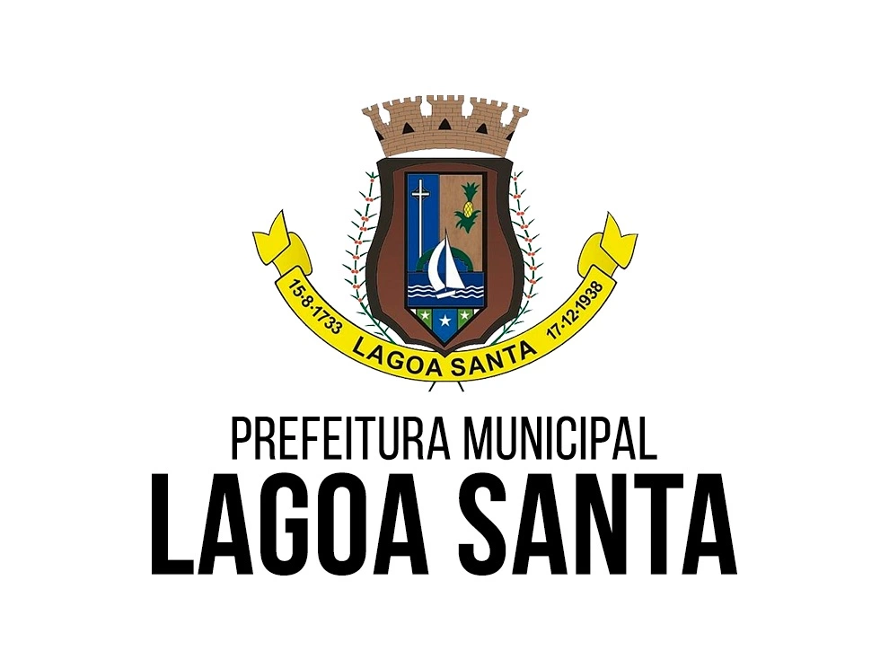Prefeitura Municipal de Itinga
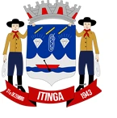Prefeitura Municipal de Dom Cavati
Prefeitura Municipal de Divino
Prefeitura Municipal de Cruzeiro da Fortaleza
Prefeitura Municipal de Contagem

Prefeitura Municipal de Conselheiro Lafaiete
Prefeitura Municipal de Congonhas
Prefeitura Municipal de Comercinho
Prefeitura Municipal de Boa Esperança
Prefeitura Municipal de Berilo
Prefeitura Municipal de Araçuaí
Prefeitura Municipal de Alterosa

IPASI - Instituto de Previdência Social de Ibirité
CISVERDE - Consórcio Intermunicipal de Saúde
Câmara Municipal de Patrocínio
Câmara Municipal de Betim

Prefeitura Municipal de Serrania
Prefeitura Municipal de Carbonita
Prefeitura de Matias Barbosa

Prefeitura Municipal de Ubá
Prefeitura Municipal de Pintangui
Câmara Municipal de Patrocínio
Prefeitura Municipal de Tiros
Prefeitura Municipal de Tombos
Prefeitura Municipal de Ouro Branco
Prefeitura Municipal de Urucânia
Câmara Municipal de Luminárias

Prefeitura Municipal de Sem Peixe

Câmara Municipal de Rubelita
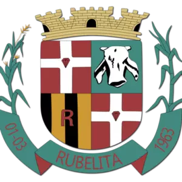Câmara Municipal de Lambarí
Prefeitura Municipal de Virgem da Lapa
Câmara Municipal de Matutina
Câmara Municipal de Cambuquira

Câmara Municipal de Itinga
Prefeitura Municipal de Cambuquira
Prefeitura Municipal de Carbonita
Prefeitura Municipal de Pintangui
Prefeitura Municipal de Diamantina
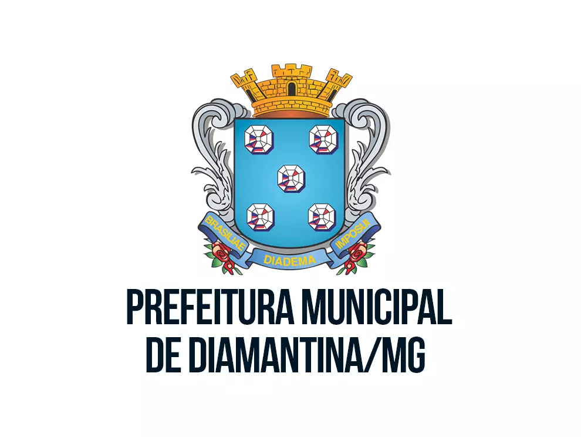Prefeitura Municipal de Divino
Prefeitura Municipal de Ouro Branco
Prefeitura Municipal de Reduto
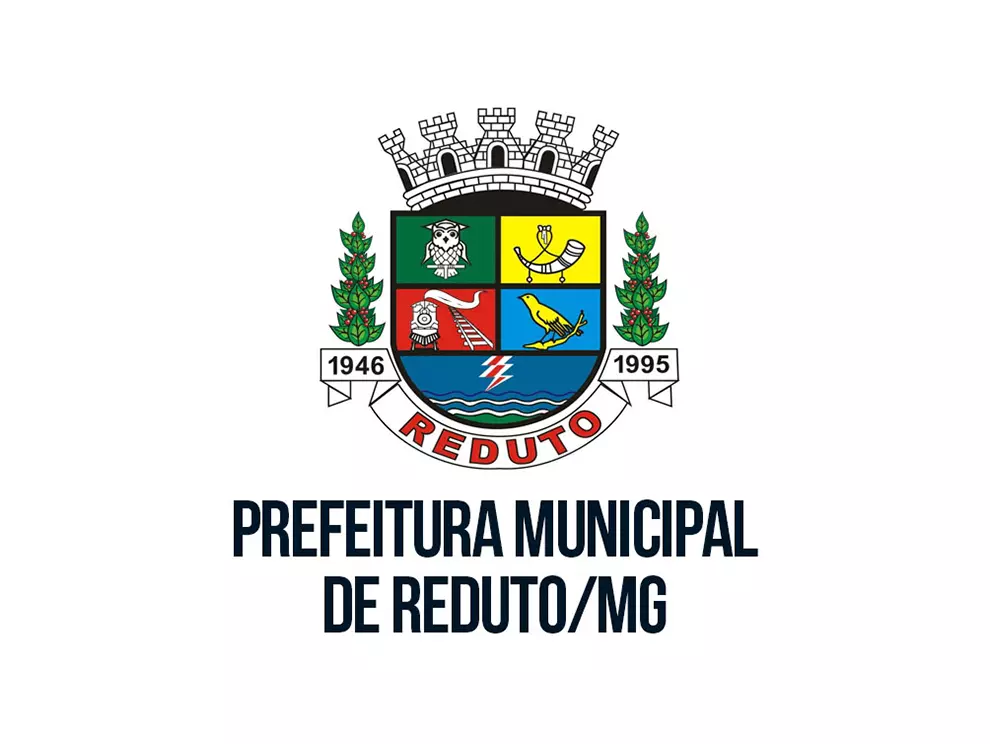Prefeitura Municipal de Tarumirim
Prefeitura Municipal de São Tomá das Letras
Prefeitura Municipal de Pitangui
Prefeitura Municipal de Luminárias
Prefeitura Municipal de Monsenhor Paulo

Prefeitura Municipal de Matutina
Prefeitura Municipal de Poços de Caldas

Prefeitura Municipal de Ubá
Prefeitura Municipal de Alvarenga

Prefeitura Municipal de Araçuaí
Prefeitura Municipal de Mutum
Prefeitura Municipal de Visconde do Rio Branco
Prefeitura Municipal de Manhuaçu
Prefeitura Municipal de Matutina
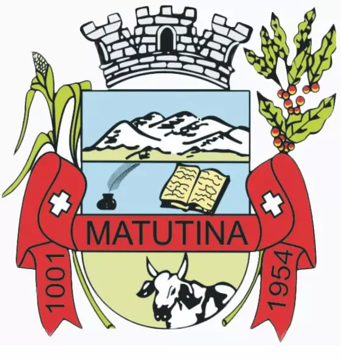Prefeitura Municipal de São Gotardo
Prefeitura Municipal de Divino
Prefeitura Municipal de São Tomá das Letras
Prefeitura Municipal de Pitangui
Prefeitura Municipal de Luminárias
Prefeitura Municipal de Monsenhor Paulo
Prefeitura Municipal de Erválha
Prefeitura Municipal de Matutina
Prefeitura Municipal de Poços de Caldas
Prefeitura Municipal de Ubá
Prefeitura Municipal de Alvarenga
Prefeitura Municipal de Araçuaí
Prefeitura Municipal de Alto do Jequitibá
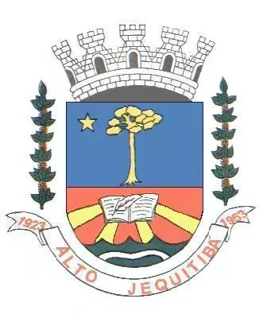Prefeitura Municipal de Berilo
Prefeitura Municipal de Cana Verde
Prefeitura Municipal de CII AMAJE – DIAMANTINA
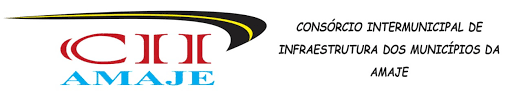Prefeitura Municipal de Datas
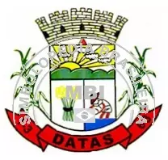Prefeitura Municipal de Espera Feliz
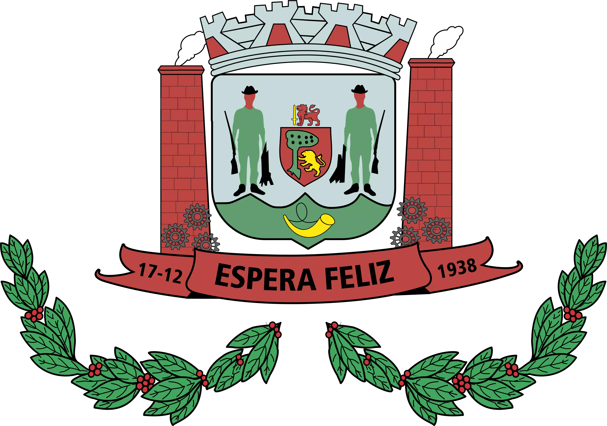Prefeitura Municipal de Mutum
Prefeitura Municipal de Visconde do Rio Branco
Prefeitura Municipal de Ribeirão Vermelho
Prefeitura Municipal de Aguanil

Câmara Municipal de São Gotardo
Consórcio Cisverde
Prefeitura Municipal de Guidoval
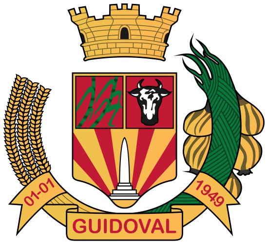Prefeitura Municipal de Manhuaçu
Prefeitura Municipal de Matutina
Prefeitura Municipal de Patrocínio
Prefeitura Municipal de Rio Paranaíba
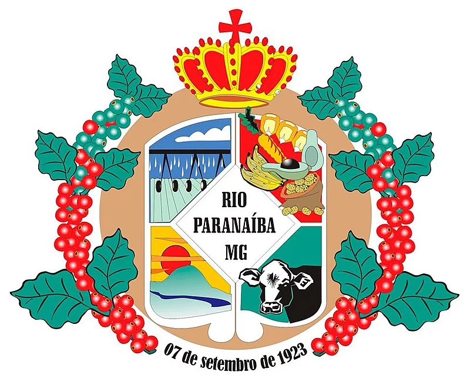Prefeitura Municipal de Raul Soares
Prefeitura Municipal de São Gotardo
Prefeitura Municipal de Tiros
Para alcançar a eficiência em seus projetos, a empresa desenvolve um constante trabalho de estudo e pesquisa.
Saiba mais